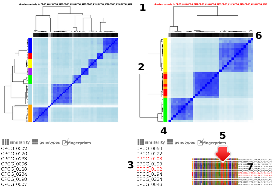

Iterpreting HTML report
This report aims to highlight problematic cases when a file, based on its genotype,
is associated with unrelated files (from another sample). This may indicate a possible sample
swap/mixup and should be investigated.
- Red title will indicate that there is a possible swap among non-related samples shown in the image
- Examining color clusters (they are not supposed to break) may help in spotting a potential sample swap
- If files from the same sample end up in different heatmaps, such sample will be highlighted in red under all heatmaps that have it
- There are download links for .csv files with similarity data for each heatmap (jaccard indexes) or genotype reports
- The 'fingerprint' image button will open a popup window with fingerprint glyphs for all files shown in the current heatmap (problematic files usually highlighted)
- A grayscale bar shows the number of SNPs called for each file (darker is better, paler shades mean fewer SNPs)
- In a popup window individual fingerprints along with the file names are shown
In some difficult cases the algoritm will not be able to highlight individual files, rather than that it will highlight
the affected samples, so the user needs to look out for tips from multiple sources, rather than one.